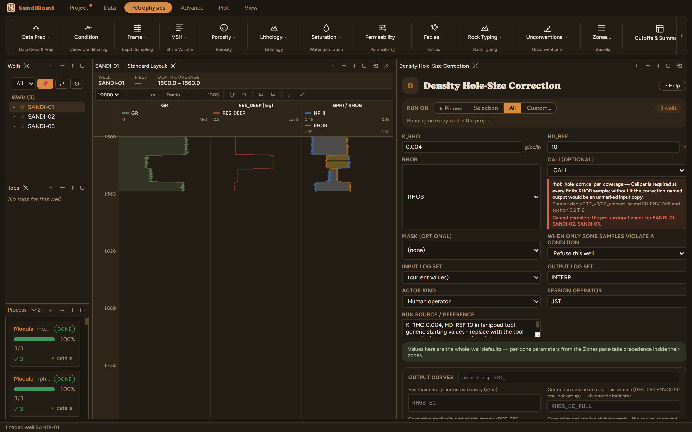

Density Hole-Size Correction restores the bulk density reading in oversize
hole, where the pad reads mud it should not, and writes RHOB_EC. Reach for it
when the caliper shows enlargement beyond the tool's compensated range but
short of outright washout; beyond a few inches of washout no correction is
trustworthy and the sample belongs to the BADHOLE mask instead.
The physics
The density tool's spine-and-ribs compensation already absorbs modest
standoff. Past a reference diameter the pad geometry runs out and the reading
drifts low, roughly linearly with the extra diameter:
RHOB_EC = RHOB + K_RHO × (CALI − HD_REF), applied only where CALI exceeds
HD_REF. Both numbers are tool properties from the vendor chart: the reference
diameter is stated per tool (a slim tool's chart anchors much smaller than a
standard one's), and K_RHO is the chart slope beyond it.
The picks and why
HD_REF 10 in (shipped starting value): where the correction
starts. This threshold decides how much of the well is touched at all. Run
live on these wells: at 10 in, 495 samples receive a
correction; pulled in to 9 in, 626 samples do, and the maximum
correction grows from +0.0048 to +0.0088 g/cc because every corrected
sample now measures its excess from a smaller reference. The 626 is worth
noticing: it is the same count the Bad-Hole chapter's tightened caliper
variant flagged, because both are counting samples with CALI beyond
9 in. Different modules, one hole.
K_RHO 0.004 g/cc per inch (shipped starting value): the
chart slope. Like the GR correction's coefficient, it scales every
correction linearly, and it is read from the tool chart rather than
tuned.
Step by step
Open Petrophysics ▸ Data Prep ▸ Density Hole-Size Correction.
Set HD_REF and K_RHO from the density tool's own chart.
Fill the custody line and press Run Density Hole-Size
Correction.
A threshold and a slope, both properties of the tool, both from
its chart.
Reading the result
3 clean. 495 of 1185 samples corrected, maximum
+0.0048 g/cc: at these hole sizes the correction is a trim, under
0.005 g/cc, which is about 0.003 v/v of density porosity. Compare in
the Database Inspector:
SELECT COUNT(*), MAX(g.value - s.rhob)
FROM computed_curves g
JOIN standard_curves s ON g.well_id = s.well_id AND g.depth = s.depth
WHERE g.curve_name = 'RHOB_EC' AND g.value - s.rhob > 1e-6

A correction confined to the enlarged intervals, and small even
there.
QC and pitfalls
This correction and the BADHOLE mask divide the same washouts between
them: correct the marginal hole, mask the hopeless hole. Setting HD_REF
far below the masked threshold makes the module repair samples the mask
will discard anyway.
If gas correction also runs, order matters conceptually: hole-size
restoration is a tool effect, gas is a formation effect, and each should
read the curve the other produced only when the study decides that
chain explicitly.
A correction bigger than a few hundredths of g/cc is the chart saying
the hole is out of range; trust the mask, not the extrapolation.